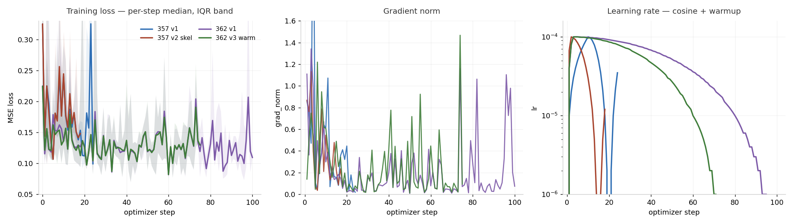
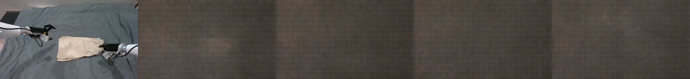
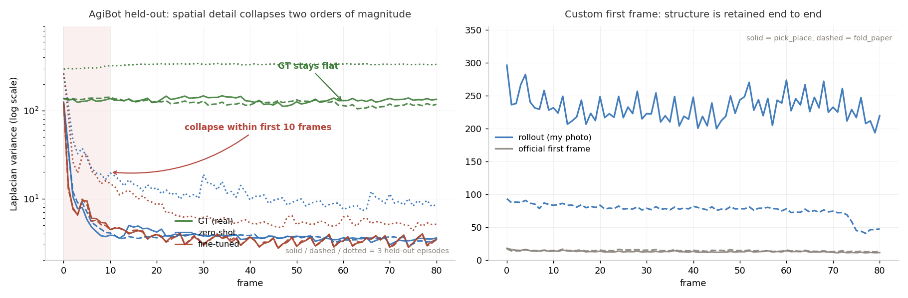
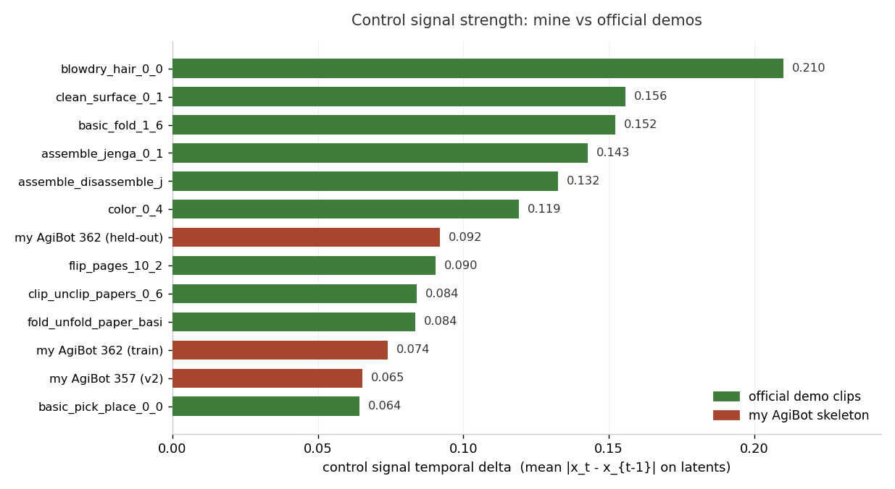
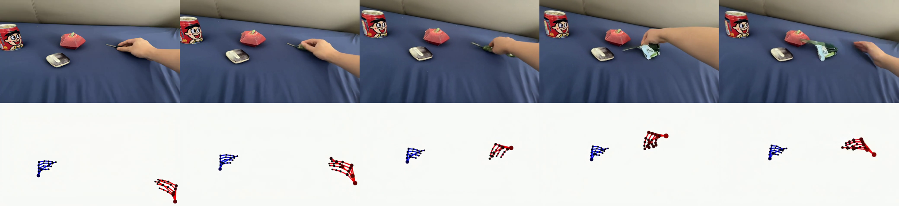
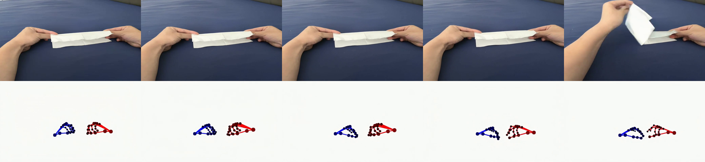
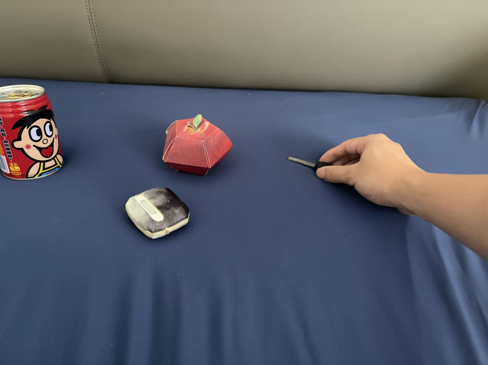
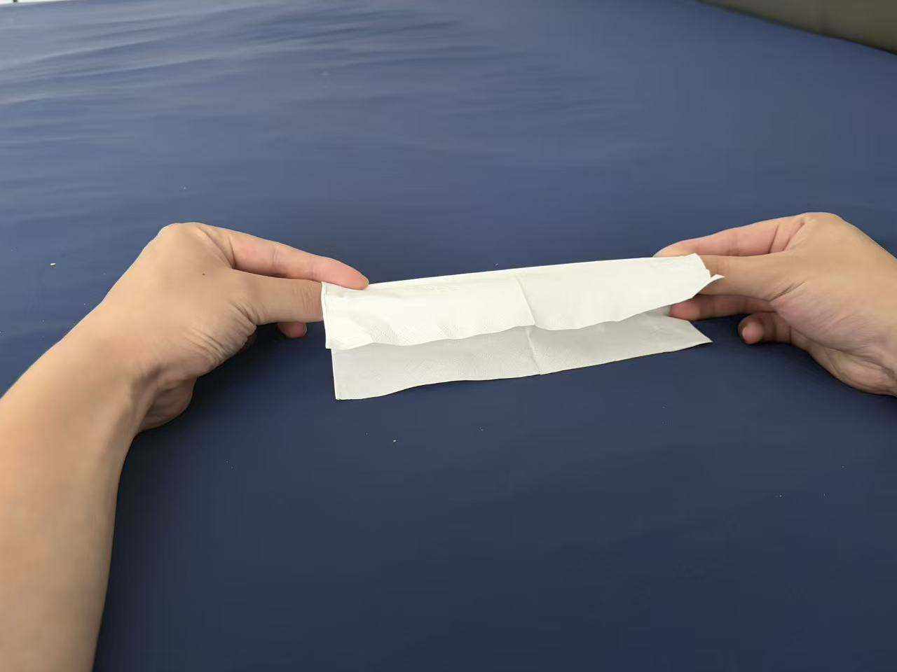

两条线:① 真机数据 LoRA 微调(357 → 362,四轮);② 自拍首帧 + 官方骨架控制推理
357 单集(v1/v2)+ 362 多集(v1/v3),数据量拉了 10 倍、超参改了两轮、修了一个真实的 harness 缺陷,held-out rollout 依然从第 2 帧开始塌缩:手臂溶解,画面糊成棕色。
关键是:zero-shot 官方 SFT 权重在同样的 AgiBot 数据上也塌(detail ratio 0.651 vs 微调后 0.663)。所以瓶颈在我准备的数据/控制信号,不在 LoRA、不在数据量。 "更多数据有没有帮助"这个问题,这轮实验无法回答。
用官方 SFT 权重 + 官方骨架控制 + 官方文本嵌入,只把首帧换成自己拍的照片, pick_place 和 fold_unfold_paper 两个动作都产出了 81 帧连贯 rollout,detail ratio 1.047 / 1.031 (>1 = 无塌缩),动作跟随骨架控制。
这两条线放在一起看有信息量:同一个 SFT 权重,喂官方数据不塌、喂我准备的 AgiBot 数据就塌。 这是本周最有价值的一个对照,直接指出问题出在数据的制备上。
先说清楚"微调"具体动了模型的哪一部分,这是理解后面所有失败的前提。
基座是 Wan2.2-TI2V-5B(Diffusers 版),一个 latent 空间的扩散 Transformer(DiT)。三个部件:
VAE(z_dim=48,把 480×832×81 帧视频压成 [48,21,30,52] latent)、
T5 文本编码器(输出 [226,4096])、
DiT 主干(30 层 block,inner_dim 3072 = 24 头 × 128)。
微调只动 DiT 主干,VAE 和文本编码器全程冻结。
| 位置 | 做法 | 参数量 |
|---|---|---|
| 30 层 block 内的 self-attn + FFN | LoRA rank 32 / alpha 32,6 个挂载点 | 30×6×2 = 360 张量 |
| DiT 最前端控制注入旁路 | control_patch_embedding + control_scale 全量训练 | 1 个 Conv3d + 1 标量 |
注意只挂了 attn1(self-attention,管时空 token 互相看 → 影响运动和一致性),
没挂 attn2(cross-attention,文本条件那条路)——任务文本固定,没必要调。
control_type=add)hidden = patch_embedding(video_latent) # 冻结主通路
+ control_scale * control_patch_embedding(skeleton) # 控制注入骨架控制信号经自己的 Conv3d 编码、乘一个可学标量门控,加到 patch embedding 输出上, 然后一起流过 30 层 block。
标准 flow-matching / 扩散去噪:采样时间步 t、给 video_latents 加噪、让模型预测速度场,
MSE loss。没有改 scheduler、没有改损失函数、没有改 VAE。这也解释了为什么后面
单步去噪 loss 收敛得很正常,但 rollout 塌——训练目标(单步)和评测方式(81 帧自回归 rollout)
之间有 gap。
每个 clip 一个 safetensors,官方三元组:
video_latentscontrol_video_latentsimg_latenttext_embedding在碰真机数据之前,先确认训练通路本身是通的。
用官方 3 个样例 clip(data/sample_data.json)跑 scripts/smoke_sft_2gpu.sh,
2×H20 全量 SFT 模式。结论:通路无误,loss 正常下降,显存峰值可控。产物 103G 在
training/smoke_sft_2gpu/,记录在 docs/training_smoke.md。
这一步确立了后面所有实验的基线:官方数据 + 官方代码 = 能训。所以之后出问题, 排查方向应该指向"我准备的数据"而不是"训练代码"。事后看,这个判断方向是对的。
目标:跨过"没做过微调"这条线,用真机 AgiBot ego 数据适配世界模型。
路径 A = 零新增下载,用手头已有的 task-357("Washing dishes with a dishwasher")单个长 episode(648751),切成 40 个 81 帧 clip。
第一版我手工合成 control_video_latents:匹配了真实控制的均值/方差,
但只有真实控制25% 的时间变化量(0.0398 vs 0.1587)。
结果:held-out motion 达 GT 的 231% 且持续发散(2.17 → 3.86),画面乱动。
另外发现一个缺陷:--ema_start_step 40 大于总步数 24,导致 EMA 的 update()
一次都没跑,ema_final 存的是训练前的影子权重(LoRA B 矩阵 0/180 非零)。
两处改动:
action/end/position + 姿态 + 夹爪渲染成
官方风格的 21 关键点骨架视频,再用官方 VAE 编码。时间变化量 0.0398 → 0.0745(真实的 47%)。ema_start_step 40 → 6(小于总步数,EMA 真的会跑),
train_epochs 6,lr_warmup_steps 3,checkpointing_steps 6。| 模型 | motion energy | % of GT | 判读 |
|---|---|---|---|
| 真实 GT | 1.21 | 100% | 参考基准 |
| zero-shot(官方 SFT) | 0.76 | 63% | 动作偏少 |
| v1 ckpt-24(自制控制) | 2.79 | 231% | 发散乱动 |
| v2 ckpt-18(渲染骨架) | 0.43 | 35% | 欠动作不塌但太静 |
这一轮学到两件事:
另外 EMA 虽然在 v2 里真的跑了(180/180 非零),但 decay 0.99 × 仅 12 次更新只到训练幅度的 ~11% (B 矩阵 absmax 0.000083 vs 0.000755)。所以评测一律用 checkpoint-N,不用 ema_final。
357 的核心限制是单 episode、单场景。这一步把数据量拉了 10 倍。
决定只做 task 362("Folding shorts"),下载两个 tar 共 ~97GB:
649552-654138.tar(48.6G,8 路相机流,只留 head_color.mp4)648533-923022.tar(48G,混了所有任务,靠路径里的 episode id 筛出 362)磁盘只剩 ~372G(96% 满),所以策略是:下载 → 流式抽取只要的文件 → 校验齐全后删掉两个 tar
(释放 97G)。抽完 /root/autodl-tmp/agibot_362_data 只有 728M。
head_color.mp4 是 AV1 编码,decord/OpenCV 都读不了,走 ffmpeg libdav1d rawvideo pipe。
| 轮次 | 任务 | episode | clip | held-out 方式 |
|---|---|---|---|---|
| 357 v1/v2 | Washing dishes | 1 | 40 | 同 episode 尾部 |
| 362 v1/v3 | Folding shorts | 20 | 395 | 3 个完整未见 episode |
held-out 更严格了:不是同一集的尾巴,而是三个完全没见过的 episode(650872 / 650213 / 650190,共 56 clip), 和训练集零帧重叠。

| run | 步数 | loss 初始 | loss 最低 | loss 末值 | grad_norm 末值 |
|---|---|---|---|---|---|
| 357 v1 | 24 | 0.128 | 0.082 | 0.099 | 0.019 |
| 357 v2 skeleton | 18 | 0.128 | 0.084 | 0.148 | 0.098 |
| 362 v1 zero-init | 100 | 0.124 | 0.056 | 0.109 | 0.075 |
| 362 v3 warm-start | 75 | 0.124 | 0.057 | 0.130 | 0.094 |
| 模型 | motion | % of GT | detail ratio | 判读 |
|---|---|---|---|---|
| 真实 GT | 0.00822 | 100% | 1.105 | 结构保持 |
| zero-shot(官方 SFT) | 0.00871 | 106% | 0.651 | 塌缩 |
| 362 v1 ckpt-100 | 0.01140 | 139% | 0.663 | 塌缩 |
| 362 v3 ckpt-75(warm-start) | 0.01322 | 161% | 0.635 | 塌缩 |

每段左 = 真实 GT,中 = zero-shot 官方权重,右 = 362 微调后。三段都是同一个结论。
episode 650190
GT 全程稳定;zero-shot 与微调后都在几帧内融化。
episode 650213
同上。注意微调后并没有比 zero-shot 更好。
episode 650872
这一集 GT 本身动作很小(motion 0.0044),所以生成侧的 motion 反而是 GT 的 262%/315% —— 但那全部来自融化过程,不是真实动作。这正是下面"不能只看 motion energy"的由来。

| 数据 | f0 | f10 | f40 | f80 | 结论 |
|---|---|---|---|---|---|
| GT(650190) | 136.9 | 137.3 | 127.6 | 134.2 | 保持 |
| zero-shot(650190) | 124.4 | 3.9 | 3.6 | 3.6 | 10 帧内塌 |
| 微调后(650190) | 123.6 | 4.5 | 3.7 | 3.5 | 10 帧内塌 |
| 自拍 pick_place | 296.1 | 231.5 | 247.6 | 219.3 | 保持 74% |
| 自拍 fold_paper | 93.5 | 83.5 | 82.0 | 47.4 | 保持 50% |
这是整周最重要的一个观察。同一个模型、同一份代码:
| 输入数据 | detail ratio | 结果 |
|---|---|---|
| 官方样例 clip(basic_fold) | 0.917 | 不塌 |
| 我准备的 AgiBot clip | 0.605–0.66 | 塌 |
而且 zero-shot 官方 SFT 权重在 AgiBot 数据上塌得和微调后一样(0.651 vs 0.663)。 LoRA 没让它变坏,但也救不了它。瓶颈在 LoRA 之前。

basic_pick_place 只有 0.064、fold_unfold_paper 0.084、flip_pages 0.091。
而 pick_place 用 0.064 的控制照样不塌。| 假设 | 如何排除 |
|---|---|
| LoRA 配置/秩不对 | zero-shot(完全不加 LoRA)也塌 |
| 数据量不够 | 357 的 40 clip → 362 的 395 clip,塌缩不变 |
| 训练超参(lr/epoch/warmup) | 改过两轮,loss 都正常收敛,塌缩不变 |
| EMA 缺陷 | v1 修复后重训,塌缩不变;且已改用 checkpoint-N 评测 |
| 控制权重零初始化 | 加 --control_init_from 热启动,幅度恢复到 SFT 水平(0.0369 vs 0.0364),塌缩不变 |
| 控制信号强度太弱 | 官方 pick_place 用更弱的 0.064 照样不塌(见上图) |
| 合成骨架 vs 真实视频的分布差异 | 官方控制本身也是白底合成骨架图,同一类东西 |
control_type=add 路径下,harness 每次运行都把 control_patch_embedding 零初始化、
并把 control_scale 硬编码成 0.1,丢掉了 SFT checkpoint 里已训练好的控制权重
(100 步只能恢复到 SFT 幅度的 1/31)。这意味着原先的"zero-shot vs 微调"对比其实不是预期的实验:
zero-shot 用的是完好的控制路径,微调分支用的是从零重学的。
我加了 --control_init_from 从 SFT 热启动控制路径,验证幅度恢复(0.0369 vs SFT 0.0364)。
然后塌缩没有消失。这是个值得保留的正确性修复,但不是瓶颈。
"更多数据有没有帮助"——这轮实验回答不了。所有分支都因为一个上游原因塌缩, 数据规模不是约束,harness 缺陷也不是。
仍然可疑、下一步要查的:骨架的几何正确性。AgiBot 没有相机内参, 投影用的相机是拟合出来的(R² 仅 0.72/0.77,误差 7–8px),骨架很可能画在了错误的位置上—— 强度对但位置错,模型就无法把它和画面内容对应起来。以及关键点语义/连接拓扑是否和官方 21 点定义一致。 这是目前唯一没被排除的可疑点,而且验证成本最低。
需求:只把首帧换成自己拍的照片,其余全部沿用官方 demo。
命令和纯复现阶段的 scripts/repro_sft_all.sh 逐参数一致,唯一区别是
--image 指向自己的照片:
python inference_user.py \
--image data/custom_first_frames/pick_place.jpg # ← 只有这里换了
--control_video example/basic_pick_place_000/control_video.mp4 # 官方
--text_embedding example/basic_pick_place_000/text_embedding.safetensors # 官方
--checkpoint pretrained/RynnWorld-Teleop # 官方 SFT
--mode sft --control_type add --seeds 42 # 官方照片任意分辨率/格式,脚本自动 resize 到 480×832 再经 VAE 编码成 img_latent,
推理时硬锚 rollout 第 0 帧。
example/ 目录下每个 demo 都自带
control_video.mp4 和 text_embedding.safetensors——我之前只搜了 data/。
走错通路的后果很明显:同一个 pick_place 控制,motion 从 0.366 变成 2.215(6 倍),
因为官方 inference_user.py 对 mp4 控制有自己的预处理。改回官方通路后动作幅度才正常。
每段左 = 生成的 rollout,右 = 输入的骨架控制。可以直接看动作是否跟随。
pick_place — 自拍首帧 + 官方骨架控制
手从右侧伸向左侧,f60 抓起一个青色物体。自己的场景(可乐罐、纸苹果、鼠标、蓝布) 全程稳住,没有漂移和变形。detail ratio 1.047。
fold_unfold_paper — 自拍首帧 + 官方骨架控制
双手捏着纸巾,前 60 帧非常稳且有真实折叠形变;f80 变成掀起纸巾, 和骨架控制里右手上抬对得上。detail ratio 1.031。
两段都是 81 帧、480×832、16fps,由官方 inference_user.py 生成,seed 42。



pick_place.jpg — 1707×1280,自动 resize 到 480×832
fold_unfold_paper.jpg — 1280×960| 指标 | pick_place | fold_unfold_paper |
|---|---|---|
| 骨架控制 motion | 2.215 | 0.734 |
| rollout motion(自拍首帧) | 3.464 | 1.181 |
| rollout motion(官方首帧,对照) | 2.383 | 0.762 |
| 清晰度 f0 → 末尾 | 296 → 216(73%) | 94 → 45(48%) |
| detail ratio | 1.047 无塌缩 | 1.031 无塌缩 |
一个副产品发现:自拍首帧的清晰度是官方 demo 首帧的 16 倍(296 vs 18)。 官方 demo 首帧本身就很模糊,自拍照片质量高得多——这也是自拍版本 rollout motion 反而高于官方版本的原因之一。
微调线要往前走,第一件事不是加数据,而是验证骨架的几何正确性。
blowdry_hair dt 0.2099 运动最强,
clean_surface 0.1556 次之)。
详细技术文档:docs/agibot_finetune.md(357 v1/v2)、
docs/agibot_362_finetune.md(362 v1/v3)。
产物:outputs/custom_official/(自拍首帧)、outputs/agibot_362_sweep/(362 held-out)、
outputs/training_curves.json(曲线原始数据)。